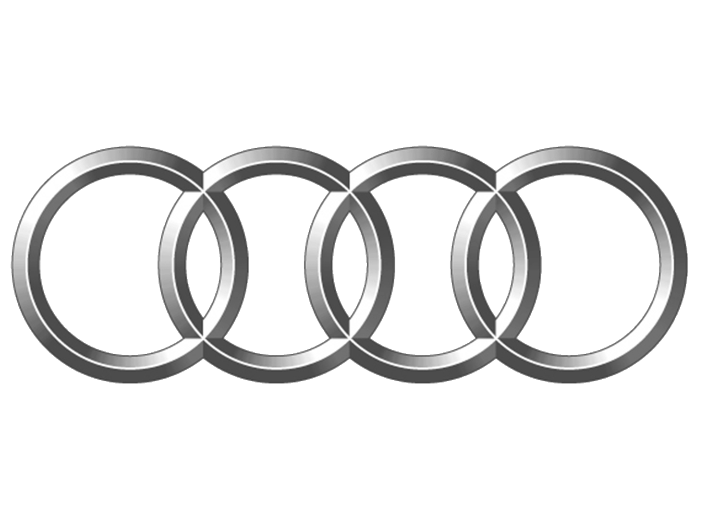
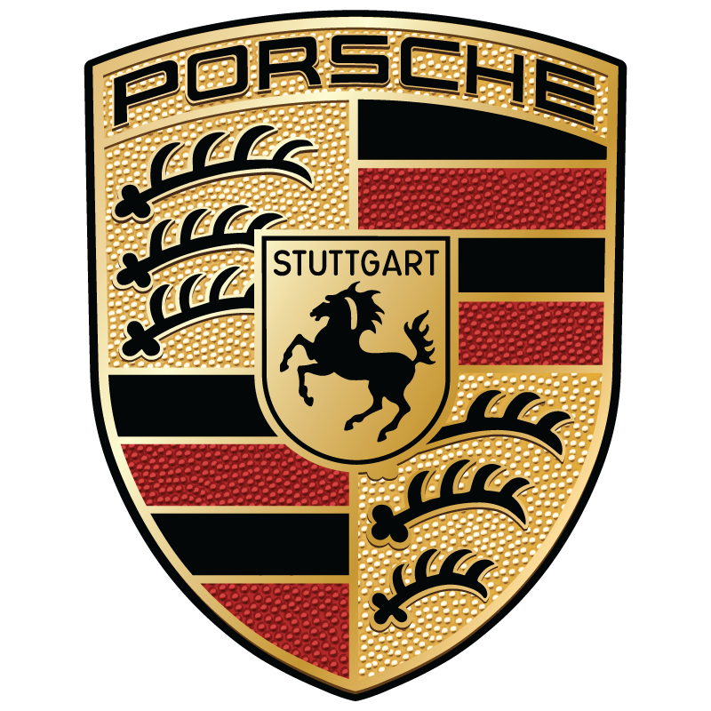
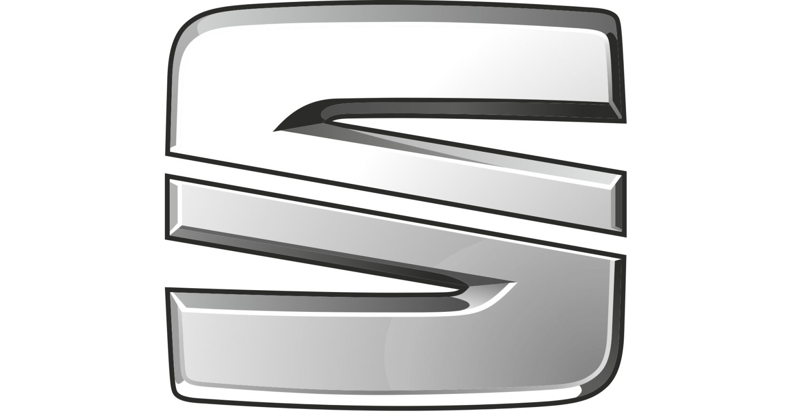
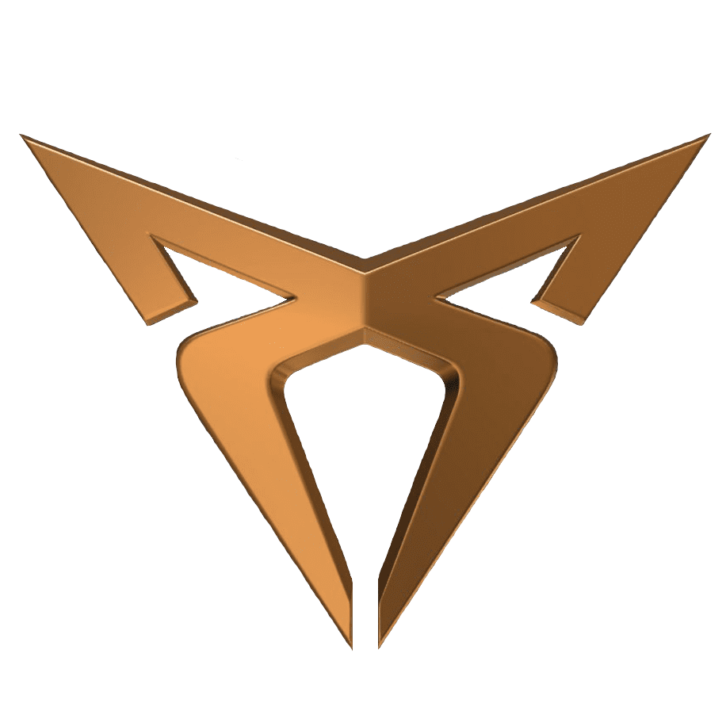

CONOCE RAE
Refacciones para quienes buscan lo mejor para su vehículo.
En RAE te ayudamos a encontrar las refacciones que necesitas, con atención personalizada y soluciones para distintas marcas y modelos.
RAE
AUTOMOTRIZ
TRABAJAMOS CON
Marcas que conoces.
Refacciones que necesitas.




¿POR QUÉ ELEGIR RAE?
Encontrar la refacción correcta hace la diferencia.
Sabemos que cada vehículo tiene necesidades distintas. Por eso buscamos ayudarte a encontrar lo que necesitas.
Atención personalizada
Te ayudamos a encontrar la opción adecuada para tu vehículo.
Distintas marcas
Trabajamos con una amplia variedad de marcas automotrices.
Cotizaciones sencillas
Contáctanos por WhatsApp para consultar tus refacciones.
¿BUSCAS UNA REFACCIÓN?